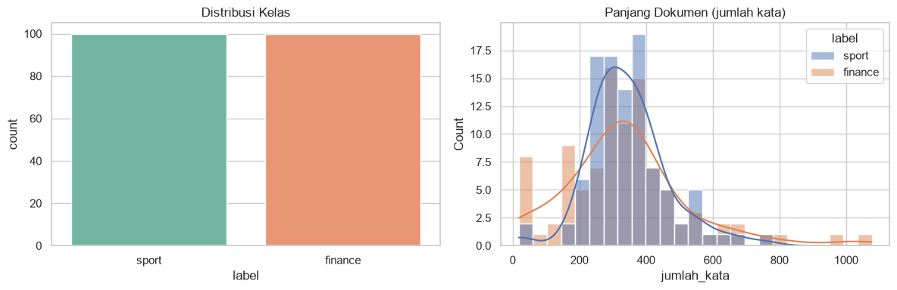
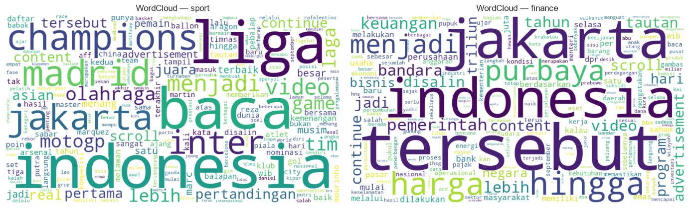
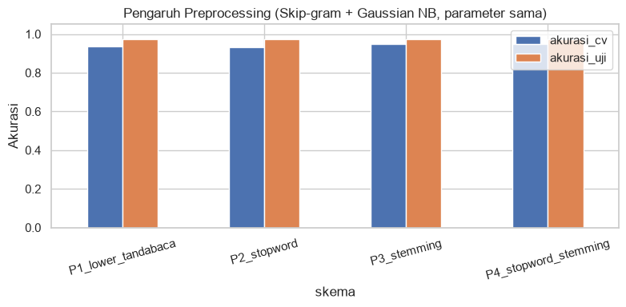
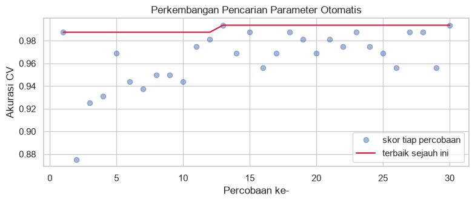
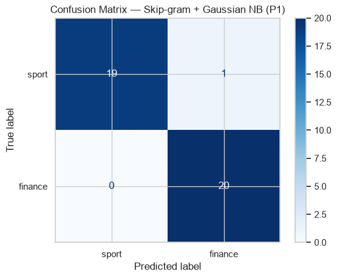
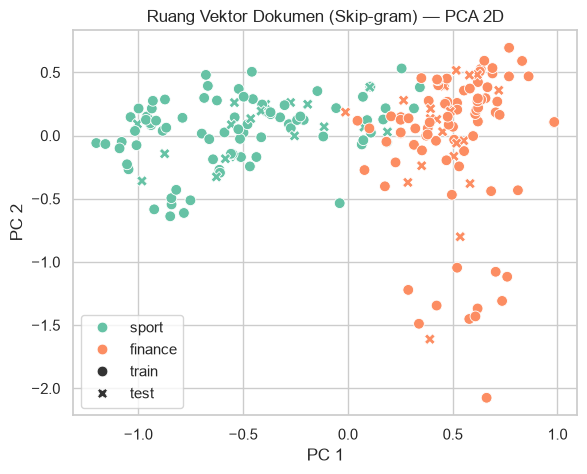

Klasifikasi Berita dengan Skip-gram (Word2Vec) + Naive Bayes#
Tugas PPW — Dataset dataset_berita.csv (200 berita Detik: sport vs finance)#
Alur singkat (untuk presentasi):
teks berita → preprocessing → Skip-gram (tiap kata jadi vektor) → rata-rata vektor = vektor dokumen → Naive Bayes → label
Keputusan utama notebook ini
P1 = huruf kecil + hapus tanda baca → ini satu-satunya skema yang dipakai untuk melatih model final.
P2, P3, P4 (tambah stopword / stemming) hanya eksperimen pembanding, tidak dipakai model final.
Parameter Skip-gram (
vector_size,window,epochs) danvar_smoothingNaive Bayes dicari otomatis oleh sistem (Optuna) pada P1.One-Hot Encoding + BernoulliNB dipakai sebagai satu pembanding sederhana (pada P1).
Bagian |
Isi |
|---|---|
1 |
Setup |
2 |
Load & bersihkan data |
3 |
EDA singkat |
4 |
Konsep Skip-gram (demo 3 kalimat) |
5 |
Preprocessing P1–P4 |
6 |
Split data latih / uji |
7 |
Eksperimen: pengaruh preprocessing & pembanding One-Hot |
8 |
Pencarian parameter otomatis dengan Optuna (pada P1) |
9 |
Model final (P1 + parameter hasil pencarian) & evaluasi |
10 |
Vector Space Model dengan label |
11 |
Simpan model & coba prediksi |
12 |
Kesimpulan |
Jalankan sel dari atas ke bawah. Hasil akhir (model) selalu memakai P1.
1. Setup#
Semua import dan konstanta ada di sini. SEED = 42 dipakai di seluruh notebook supaya hasil bisa diulang (split data, Word2Vec, cross-validation).
Jika library belum terpasang (termasuk optuna untuk pencarian parameter otomatis), hapus tanda # pada baris %pip install lalu jalankan sekali.
%pip install gensim Sastrawi scikit-learn pandas matplotlib seaborn wordcloud optuna
Requirement already satisfied: gensim in c:\users\acer\appdata\local\programs\python\python311\lib\site-packages (4.4.0)
Requirement already satisfied: Sastrawi in c:\users\acer\appdata\local\programs\python\python311\lib\site-packages (1.0.1)
Requirement already satisfied: scikit-learn in c:\users\acer\appdata\local\programs\python\python311\lib\site-packages (1.9.1)
Requirement already satisfied: pandas in c:\users\acer\appdata\local\programs\python\python311\lib\site-packages (2.2.3)
Requirement already satisfied: matplotlib in c:\users\acer\appdata\local\programs\python\python311\lib\site-packages (3.11.1)
Requirement already satisfied: seaborn in c:\users\acer\appdata\local\programs\python\python311\lib\site-packages (0.13.2)
Requirement already satisfied: wordcloud in c:\users\acer\appdata\local\programs\python\python311\lib\site-packages (1.9.6)
Requirement already satisfied: optuna in c:\users\acer\appdata\local\programs\python\python311\lib\site-packages (5.0.0)
Requirement already satisfied: numpy>=1.18.5 in c:\users\acer\appdata\local\programs\python\python311\lib\site-packages (from gensim) (2.2.4)
Requirement already satisfied: scipy>=1.7.0 in c:\users\acer\appdata\local\programs\python\python311\lib\site-packages (from gensim) (1.15.2)
Requirement already satisfied: smart_open>=1.8.1 in c:\users\acer\appdata\local\programs\python\python311\lib\site-packages (from gensim) (8.0.1)
Requirement already satisfied: joblib>=1.4.0 in c:\users\acer\appdata\local\programs\python\python311\lib\site-packages (from scikit-learn) (1.6.0)
Requirement already satisfied: narwhals>=2.0.1 in c:\users\acer\appdata\local\programs\python\python311\lib\site-packages (from scikit-learn) (2.26.0)
Requirement already satisfied: threadpoolctl>=3.5.0 in c:\users\acer\appdata\local\programs\python\python311\lib\site-packages (from scikit-learn) (3.6.0)
Requirement already satisfied: python-dateutil>=2.8.2 in c:\users\acer\appdata\local\programs\python\python311\lib\site-packages (from pandas) (2.9.0.post0)
Requirement already satisfied: pytz>=2020.1 in c:\users\acer\appdata\local\programs\python\python311\lib\site-packages (from pandas) (2025.1)
Requirement already satisfied: tzdata>=2022.7 in c:\users\acer\appdata\local\programs\python\python311\lib\site-packages (from pandas) (2025.1)
Requirement already satisfied: contourpy>=1.0.1 in c:\users\acer\appdata\local\programs\python\python311\lib\site-packages (from matplotlib) (1.3.3)
Requirement already satisfied: cycler>=0.10 in c:\users\acer\appdata\local\programs\python\python311\lib\site-packages (from matplotlib) (0.12.1)
Requirement already satisfied: fonttools>=4.28.2 in c:\users\acer\appdata\local\programs\python\python311\lib\site-packages (from matplotlib) (4.65.0)
Requirement already satisfied: kiwisolver>=1.3.1 in c:\users\acer\appdata\local\programs\python\python311\lib\site-packages (from matplotlib) (1.5.1)
Requirement already satisfied: packaging>=20.0 in c:\users\acer\appdata\local\programs\python\python311\lib\site-packages (from matplotlib) (24.2)
Requirement already satisfied: pillow>=9 in c:\users\acer\appdata\local\programs\python\python311\lib\site-packages (from matplotlib) (12.3.0)
Requirement already satisfied: pyparsing>=3 in c:\users\acer\appdata\local\programs\python\python311\lib\site-packages (from matplotlib) (3.3.2)
Requirement already satisfied: alembic>=1.5.0 in c:\users\acer\appdata\local\programs\python\python311\lib\site-packages (from optuna) (1.20.0)
Requirement already satisfied: colorlog in c:\users\acer\appdata\local\programs\python\python311\lib\site-packages (from optuna) (6.12.0)
Requirement already satisfied: sqlalchemy>=1.4.2 in c:\users\acer\appdata\local\programs\python\python311\lib\site-packages (from optuna) (2.0.39)
Requirement already satisfied: tqdm in c:\users\acer\appdata\local\programs\python\python311\lib\site-packages (from optuna) (4.70.1)
Requirement already satisfied: PyYAML in c:\users\acer\appdata\local\programs\python\python311\lib\site-packages (from optuna) (6.0.2)
Requirement already satisfied: Mako in c:\users\acer\appdata\local\programs\python\python311\lib\site-packages (from alembic>=1.5.0->optuna) (1.4.3)
Requirement already satisfied: typing-extensions>=4.12 in c:\users\acer\appdata\local\programs\python\python311\lib\site-packages (from alembic>=1.5.0->optuna) (4.16.0)
Requirement already satisfied: cloudpickle>=3.0 in c:\users\acer\appdata\local\programs\python\python311\lib\site-packages (from joblib>=1.4.0->scikit-learn) (3.1.2)
Requirement already satisfied: six>=1.5 in c:\users\acer\appdata\local\programs\python\python311\lib\site-packages (from python-dateutil>=2.8.2->pandas) (1.17.0)
Requirement already satisfied: wrapt in c:\users\acer\appdata\local\programs\python\python311\lib\site-packages (from smart_open>=1.8.1->gensim) (2.4.1)
Requirement already satisfied: greenlet!=0.4.17 in c:\users\acer\appdata\local\programs\python\python311\lib\site-packages (from sqlalchemy>=1.4.2->optuna) (3.1.1)
Requirement already satisfied: colorama in c:\users\acer\appdata\local\programs\python\python311\lib\site-packages (from colorlog->optuna) (0.4.6)
Requirement already satisfied: MarkupSafe>=2.0 in c:\users\acer\appdata\local\programs\python\python311\lib\site-packages (from Mako->alembic>=1.5.0->optuna) (3.0.2)
Note: you may need to restart the kernel to use updated packages.
[notice] A new release of pip is available: 24.2 -> 26.2.1
[notice] To update, run: python.exe -m pip install --upgrade pip
import os, re, json, joblib
import numpy as np
import pandas as pd
import matplotlib.pyplot as plt
import seaborn as sns
from wordcloud import WordCloud
import optuna
from gensim.models import Word2Vec
from sklearn.model_selection import train_test_split, StratifiedKFold
from sklearn.feature_extraction.text import CountVectorizer
from sklearn.naive_bayes import BernoulliNB, GaussianNB
from sklearn.decomposition import PCA
from sklearn.metrics import accuracy_score, classification_report, ConfusionMatrixDisplay
from Sastrawi.StopWordRemover.StopWordRemoverFactory import StopWordRemoverFactory
from Sastrawi.Stemmer.StemmerFactory import StemmerFactory
pd.set_option("display.max_colwidth", 100)
sns.set_theme(style="whitegrid")
SEED = 42
# Tools Bahasa Indonesia dari Sastrawi (dibuat sekali)
STOPWORDS_ID = set(StopWordRemoverFactory().get_stop_words())
STEMMER = StemmerFactory().create_stemmer()
print("Jumlah stopword Sastrawi :", len(STOPWORDS_ID))
Jumlah stopword Sastrawi : 123
2. Load Dataset & Pembersihan Data#
Dataset: artikel berita hasil scraping Detik.com dengan dua kelas, sport dan finance.
Langkah pada sel di bawah:
Baca
dataset_berita.csv.Cari kolom label dan kolom teks berita secara otomatis (nama kolom lain bisa ditambah ke daftar kandidat).
Buang data kosong dan duplikat (duplikat bisa membuat data uji “bocor” ke data latih sehingga akurasi terlihat terlalu bagus).
Hasilnya: df_berita dengan kolom teks dan label.
Ubah
DIR_DATASETjika lokasi file berbeda.
DIR_DATASET = r"C:\Users\acer\OneDrive\Documents\DOKUMEN KULIAH\Semester 7\ppw"
PATH_BERITA = os.path.join(DIR_DATASET, "dataset_berita.csv")
df_raw = pd.read_csv(PATH_BERITA)
print("Kolom di file :", df_raw.columns.tolist())
KANDIDAT_LABEL = ["label", "kategori", "category", "kelas", "class", "topik", "rubrik"]
KANDIDAT_TEKS = ["isi_berita", "isi", "konten", "content", "teks", "text", "artikel", "berita", "body"]
LABEL_COL = next((c for c in KANDIDAT_LABEL if c in df_raw.columns), None)
TEXT_COL = next((c for c in KANDIDAT_TEKS if c in df_raw.columns), None)
if LABEL_COL is None or TEXT_COL is None:
raise ValueError(f"Kolom label/teks tidak ditemukan. Kolom tersedia: {df_raw.columns.tolist()}")
print("Kolom label :", LABEL_COL, "| Kolom teks :", TEXT_COL)
df_berita = df_raw[[TEXT_COL, LABEL_COL]].rename(columns={TEXT_COL: "teks", LABEL_COL: "label"})
print("\nJumlah awal :", len(df_berita))
print("Data kosong :", df_berita["teks"].isna().sum())
print("Data duplikat :", df_berita.duplicated(subset="teks").sum())
df_berita = (df_berita.dropna(subset=["teks"])
.drop_duplicates(subset="teks")
.reset_index(drop=True))
print("Jumlah setelah bersih :", len(df_berita))
df_berita.head()
Kolom di file : ['id', 'isi_berita', 'label']
Kolom label : label | Kolom teks : isi_berita
Jumlah awal : 200
Data kosong : 0
Data duplikat : 0
Jumlah setelah bersih : 200
| teks | label | |
|---|---|---|
| 0 | Jakarta - Putri Kusuma Wardani percaya diri dengan komposisi beregu putri yang dipilih PBSI untu... | sport |
| 1 | Jakarta - Mata Derrick Michael Xzavierro berbinar saat berbicara soal Asian Games 2026. Dia akan... | sport |
| 2 | Jakarta - Marc Marquez masih harus beradaptasi dengan kondisi lengan kanan yang jauh dari normal... | sport |
| 3 | Jakarta - Momen debut di Asian Games 2026 tak mau disia-siakan Alwi Farhan. Pebulutangkis tungga... | sport |
| 4 | Jakarta - MotoGP 2026 akan berlanjut ke San Marino. Seri ke-14 musim ini akan digelar di Misano ... | sport |
3. EDA Singkat#
Tiga hal yang dilihat sebelum membuat model:
Distribusi kelas — seimbang atau tidak. Jika seimbang, akurasi cukup layak dipakai sebagai metrik.
Panjang dokumen (jumlah kata) — dokumen sangat pendek membuat rata-rata vektor kata kurang stabil.
WordCloud — kata dominan tiap kelas. Jika kosakatanya berbeda jauh, klasifikasi biasanya mudah.
print("Distribusi kelas:")
print(df_berita["label"].value_counts())
df_berita["jumlah_kata"] = df_berita["teks"].astype(str).str.split().str.len()
print("\nJumlah kata per dokumen (per kelas):")
print(df_berita.groupby("label")["jumlah_kata"].describe().round(1))
fig, axes = plt.subplots(1, 2, figsize=(12, 4))
sns.countplot(data=df_berita, x="label", hue="label", palette="Set2", legend=False, ax=axes[0])
axes[0].set_title("Distribusi Kelas")
sns.histplot(data=df_berita, x="jumlah_kata", hue="label", bins=25, kde=True, ax=axes[1])
axes[1].set_title("Panjang Dokumen (jumlah kata)")
plt.tight_layout()
plt.show()
Distribusi kelas:
label
sport 100
finance 100
Name: count, dtype: int64
Jumlah kata per dokumen (per kelas):
count mean std min 25% 50% 75% max
label
finance 100.0 336.1 189.4 18.0 232.0 325.0 401.5 1077.0
sport 100.0 344.7 116.6 21.0 270.5 331.0 393.0 753.0

def teks_untuk_wordcloud(serial_teks):
kata = re.findall(r"[a-z]{3,}", " ".join(serial_teks.astype(str)).lower())
return " ".join(k for k in kata if k not in STOPWORDS_ID)
fig, axes = plt.subplots(1, 2, figsize=(14, 5))
for ax, kelas in zip(axes, ["sport", "finance"]):
teks_kelas = teks_untuk_wordcloud(df_berita.loc[df_berita["label"] == kelas, "teks"])
wc = WordCloud(width=800, height=450, background_color="white",
collocations=False, random_state=SEED).generate(teks_kelas)
ax.imshow(wc, interpolation="bilinear")
ax.set_title(f"WordCloud — {kelas}")
ax.axis("off")
plt.tight_layout()
plt.show()

4. Konsep Skip-gram (demo 3 kalimat)#
Word2Vec mengubah setiap kata menjadi vektor angka berdimensi tetap. Kata yang sering muncul di konteks yang mirip akan punya vektor yang berdekatan.
Skip-gram: satu kata target dipakai untuk menebak kata-kata di sekitarnya (konteks).
Parameter |
Arti |
|---|---|
|
panjang vektor tiap kata (jumlah dimensi) |
|
berapa kata di kiri dan kanan target yang dianggap konteks |
|
berapa kali model membaca seluruh data latih |
|
pakai Skip-gram ( |
|
kata yang muncul kurang dari ini diabaikan |
Contoh window=2 pada kalimat harga saham bank naik hari ini, target saham:
Skip-gram vs CBOW (untuk jawaban jika ditanya kenapa memilih Skip-gram):
Skip-gram |
CBOW |
|
|---|---|---|
Arah |
1 target → banyak konteks |
banyak konteks → 1 target |
Kata jarang |
lebih baik |
kurang baik |
Data kecil |
cocok |
kurang cocok |
Kecepatan |
lebih lambat |
lebih cepat |
# Dataset mini (sudah huruf kecil & tanpa tanda baca)
kalimat_demo = [
"harga saham bank naik hari ini",
"investor membeli saham bank besar",
"pemain bola mencetak gol indah",
]
korpus_demo = [k.split() for k in kalimat_demo]
VECTOR_SIZE_DEMO, WINDOW_DEMO = 5, 2
def pasangan_target_konteks(tokens, window):
# Tiap kata jadi target, lalu dipasangkan dengan kata di kiri/kanan sejauh `window`
pasangan = []
for i, target in enumerate(tokens):
for j in range(max(0, i - window), min(len(tokens), i + window + 1)):
if j != i:
pasangan.append((target, tokens[j]))
return pasangan
print("Kalimat 1 :", korpus_demo[0], "\n")
pasangan = pasangan_target_konteks(korpus_demo[0], WINDOW_DEMO)
for target in korpus_demo[0]:
print(f"{target:8s} -> {[k for t, k in pasangan if t == target]}")
total = sum(len(pasangan_target_konteks(k, WINDOW_DEMO)) for k in korpus_demo)
print(f"\nTotal pasangan (target, konteks) pada 3 kalimat : {total}")
pd.DataFrame(pasangan, columns=["target", "konteks"]).head(10)
Kalimat 1 : ['harga', 'saham', 'bank', 'naik', 'hari', 'ini']
harga -> ['saham', 'bank']
saham -> ['harga', 'bank', 'naik']
bank -> ['harga', 'saham', 'naik', 'hari']
naik -> ['saham', 'bank', 'hari', 'ini']
hari -> ['bank', 'naik', 'ini']
ini -> ['naik', 'hari']
Total pasangan (target, konteks) pada 3 kalimat : 46
| target | konteks | |
|---|---|---|
| 0 | harga | saham |
| 1 | harga | bank |
| 2 | saham | harga |
| 3 | saham | bank |
| 4 | saham | naik |
| 5 | bank | harga |
| 6 | bank | saham |
| 7 | bank | naik |
| 8 | bank | hari |
| 9 | naik | saham |
# Latih Skip-gram kecil, lalu lihat vektor kata "saham"
model_demo = Word2Vec(sentences=korpus_demo, vector_size=VECTOR_SIZE_DEMO, window=WINDOW_DEMO,
min_count=1, sg=1, epochs=100, seed=SEED, workers=1)
print("Vektor kata 'saham' :", np.round(model_demo.wv["saham"], 4))
print("Bentuk vektor :", model_demo.wv["saham"].shape)
def cosine_similarity(a, b):
return float(np.dot(a, b) / (np.linalg.norm(a) * np.linalg.norm(b)))
print("\nKemiripan (cosine) dengan 'saham':")
for kata in ["bank", "investor", "gol", "pemain"]:
print(f" saham vs {kata:9s}: {cosine_similarity(model_demo.wv['saham'], model_demo.wv[kata]):.4f}")
Vektor kata 'saham' : [ 0.1428 -0.1651 0.0782 -0.1188 -0.1623]
Bentuk vektor : (5,)
Kemiripan (cosine) dengan 'saham':
saham vs bank : -0.4577
saham vs investor : 0.1880
saham vs gol : -0.1316
saham vs pemain : -0.3315
Cara membaca output:
Tiap kata menjadi vektor sepanjang
vector_size(di sini 5 angka).Cosine similarity mengukur kemiripan arah dua vektor: dekat
1= mirip, dekat0= tidak berhubungan, negatif = berlawanan.
Korpus demo hanya 3 kalimat, jadi angkanya hanya ilustrasi cara kerja, bukan untuk ditafsirkan maknanya.
5. Preprocessing P1–P4#
Semua skema selalu diawali dua langkah dasar:
Case folding — ubah ke huruf kecil (
Saham→saham)Hapus tanda baca — (
Jakarta, harga→jakarta harga)
lalu dipecah menjadi token (tokenisasi). Perbedaan antar skema hanya pada langkah tambahan:
Skema |
Langkah |
Peran |
|---|---|---|
P1 |
huruf kecil + hapus tanda baca |
dipakai untuk melatih model final |
P2 |
P1 + hapus stopword |
eksperimen |
P3 |
P1 + stemming |
eksperimen |
P4 |
P1 + stopword + stemming |
eksperimen |
Stopword = kata umum yang kurang bermakna (
yang,dan,untuk) — daftar dari Sastrawi.Stemming = mengubah kata ke bentuk dasar (
menyebut→sebut) — algoritma Sastrawi (Nazief–Adriani).
Angka dan token 1 huruf tidak dibuang pada semua skema, supaya perbedaannya hanya pada langkah di tabel.
_cache_stem = {} # stemming lambat, jadi hasilnya disimpan per kata unik
def preprocess(teks, hapus_stopword=False, stemming=False):
# Teks mentah -> list token. Langkah dasar (P1) selalu jalan.
teks = str(teks).lower() # 1. huruf kecil
teks = re.sub(r"[^\w\s]", " ", teks) # 2. hapus tanda baca
tokens = teks.split() # 3. tokenisasi
if hapus_stopword: # tambahan (P2, P4)
tokens = [t for t in tokens if t not in STOPWORDS_ID]
if stemming: # tambahan (P3, P4)
for i, t in enumerate(tokens):
if t not in _cache_stem:
_cache_stem[t] = STEMMER.stem(t)
tokens[i] = _cache_stem[t]
return tokens
PREP_CONFIGS = {
"P1_lower_tandabaca": dict(hapus_stopword=False, stemming=False),
"P2_stopword": dict(hapus_stopword=True, stemming=False),
"P3_stemming": dict(hapus_stopword=False, stemming=True),
"P4_stopword_stemming": dict(hapus_stopword=True, stemming=True),
}
MODEL_PREP = "P1_lower_tandabaca" # skema yang dipakai model final
prep_results = {}
for nama, cfg in PREP_CONFIGS.items():
print("Memproses", nama, "...")
prep_results[nama] = df_berita["teks"].apply(preprocess, **cfg)
print("\nTEKS ASLI :", df_berita.loc[0, "teks"][:200])
for nama in PREP_CONFIGS:
print(f"\n[{nama}] ->", prep_results[nama][0][:12])
print("\nUkuran kosakata unik tiap skema:")
for nama, serial in prep_results.items():
print(f" {nama:22s}: {len(set(t for dok in serial for t in dok))} kata")
Memproses P1_lower_tandabaca ...
Memproses P2_stopword ...
Memproses P3_stemming ...
Memproses P4_stopword_stemming ...
TEKS ASLI : Jakarta - Putri Kusuma Wardani percaya diri dengan komposisi beregu putri yang dipilih PBSI untuk Asian Games 2026. Dia juga menyebut chemistry satu sama lain sudah klop. Bulutangkis Indonesia mengiri
[P1_lower_tandabaca] -> ['jakarta', 'putri', 'kusuma', 'wardani', 'percaya', 'diri', 'dengan', 'komposisi', 'beregu', 'putri', 'yang', 'dipilih']
[P2_stopword] -> ['jakarta', 'putri', 'kusuma', 'wardani', 'percaya', 'diri', 'komposisi', 'beregu', 'putri', 'dipilih', 'pbsi', 'asian']
[P3_stemming] -> ['jakarta', 'putri', 'kusuma', 'wardani', 'percaya', 'diri', 'dengan', 'komposisi', 'regu', 'putri', 'yang', 'pilih']
[P4_stopword_stemming] -> ['jakarta', 'putri', 'kusuma', 'wardani', 'percaya', 'diri', 'komposisi', 'regu', 'putri', 'pilih', 'pbsi', 'asi']
Ukuran kosakata unik tiap skema:
P1_lower_tandabaca : 7793 kata
P2_stopword : 7681 kata
P3_stemming : 5691 kata
P4_stopword_stemming : 5632 kata
6. Split Data Latih / Uji#
Data dibagi 80% latih dan 20% uji secara stratified (proporsi sport : finance tetap sama). Label diubah ke angka: sport = 0, finance = 1.
Yang disimpan adalah indeks (idx_train, idx_test). Dengan begitu semua skema preprocessing diuji pada dokumen uji yang persis sama, sehingga perbandingannya adil.
Aturan penting: data uji tidak boleh dipakai untuk melatih Word2Vec maupun Naive Bayes (kalau dipakai = data leakage).
PETA_LABEL = {"sport": 0, "finance": 1}
if not df_berita["label"].isin(PETA_LABEL).all():
raise ValueError(f"Label tak dikenal: {df_berita['label'].unique().tolist()}")
y = df_berita["label"].map(PETA_LABEL).values
idx_train, idx_test = train_test_split(np.arange(len(df_berita)), test_size=0.2,
random_state=SEED, stratify=y)
y_train, y_test = y[idx_train], y[idx_test]
print("Data latih :", len(idx_train), "| Data uji :", len(idx_test))
print("Kelas data latih :", np.bincount(y_train), "| Kelas data uji :", np.bincount(y_test))
Data latih : 160 | Data uji : 40
Kelas data latih : [80 80] | Kelas data uji : [20 20]
7. Eksperimen#
7.1 Fungsi inti: Skip-gram → vektor dokumen → Gaussian Naive Bayes#
Satu fungsi evaluasi() dipakai di semua tempat (eksperimen, grid search, model final), jadi cukup dijelaskan sekali:
Latih Skip-gram hanya dari dokumen latih.
Vektor dokumen = rata-rata vektor semua kata di dokumen itu:
Kata yang tidak ada di kosakata dilewati; dokumen tanpa kata dikenal diberi vektor nol. 3. Gaussian Naive Bayes dilatih pada vektor dokumen. Dipilih Gaussian karena fiturnya bilangan real (bisa negatif).
Fungsi cv_skipgram() mengulang langkah di atas dengan cross-validation pada data latih saja: data latih dibagi 5 bagian, bergantian 4 bagian untuk melatih dan 1 bagian untuk menguji. Hasilnya rata-rata 5 akurasi — lebih stabil daripada satu kali split dan tidak menyentuh data uji.
def dokumen_ke_vektor(tokens, w2v):
# Rata-rata vektor semua kata dalam dokumen (kata di luar kosakata dilewati)
vektor = [w2v.wv[t] for t in tokens if t in w2v.wv]
return np.mean(vektor, axis=0) if vektor else np.zeros(w2v.vector_size)
def evaluasi(tok_latih, y_latih, tok_uji, y_uji, vector_size=100, window=5, epochs=20, var_smoothing=1e-9):
# Latih Skip-gram + GaussianNB pada data latih, uji pada data uji.
w2v = Word2Vec(sentences=tok_latih, vector_size=vector_size, window=window,
min_count=1, sg=1, epochs=epochs, seed=SEED, workers=1)
X_latih = np.array([dokumen_ke_vektor(t, w2v) for t in tok_latih])
X_uji = np.array([dokumen_ke_vektor(t, w2v) for t in tok_uji])
nb = GaussianNB(var_smoothing=var_smoothing).fit(X_latih, y_latih)
y_pred = nb.predict(X_uji)
return accuracy_score(y_uji, y_pred), y_pred, w2v, nb
def cv_skipgram(tok_latih, y_latih, k=5, **param):
# Rata-rata akurasi k-fold cross-validation (hanya memakai data latih)
skf = StratifiedKFold(n_splits=k, shuffle=True, random_state=SEED)
skor = []
for tr, va in skf.split(np.zeros(len(y_latih)), y_latih):
acc, _, _, _ = evaluasi([tok_latih[i] for i in tr], y_latih[tr],
[tok_latih[i] for i in va], y_latih[va], **param)
skor.append(acc)
return float(np.mean(skor))
def ambil_token(nama_skema):
# Token skema tertentu -> (token latih, token uji)
tokens = prep_results[nama_skema].tolist()
return [tokens[i] for i in idx_train], [tokens[i] for i in idx_test]
7.2 Pengaruh preprocessing (P1–P4)#
Keempat skema diuji dengan parameter Skip-gram yang sama (vector_size=100, window=5, epochs=20) agar adil. Dua angka dilaporkan:
akurasi_cv — rata-rata cross-validation pada data latih
akurasi_uji — akurasi pada data uji
Tujuannya hanya melihat apakah stopword / stemming membantu. Model final tetap memakai P1.
PARAM_TETAP = dict(vector_size=100, window=5, epochs=20)
hasil_prep = []
for nama in PREP_CONFIGS:
tok_tr, tok_te = ambil_token(nama)
acc_cv = cv_skipgram(tok_tr, y_train, **PARAM_TETAP)
acc_uji = evaluasi(tok_tr, y_train, tok_te, y_test, **PARAM_TETAP)[0]
hasil_prep.append({"skema": nama, "akurasi_cv": acc_cv, "akurasi_uji": acc_uji})
print(f"{nama:22s} | CV = {acc_cv:.4f} | uji = {acc_uji:.4f}")
df_prep = pd.DataFrame(hasil_prep)
ax = df_prep.set_index("skema")[["akurasi_cv", "akurasi_uji"]].plot(kind="bar", figsize=(8, 4), rot=15)
ax.set_title("Pengaruh Preprocessing (Skip-gram + Gaussian NB, parameter sama)")
ax.set_ylabel("Akurasi")
ax.set_ylim(0, 1.05)
plt.tight_layout()
plt.show()
df_prep
P1_lower_tandabaca | CV = 0.9375 | uji = 0.9750
P2_stopword | CV = 0.9313 | uji = 0.9750
P3_stemming | CV = 0.9500 | uji = 0.9750
P4_stopword_stemming | CV = 0.9500 | uji = 0.9750

| skema | akurasi_cv | akurasi_uji | |
|---|---|---|---|
| 0 | P1_lower_tandabaca | 0.93750 | 0.975 |
| 1 | P2_stopword | 0.93125 | 0.975 |
| 2 | P3_stemming | 0.95000 | 0.975 |
| 3 | P4_stopword_stemming | 0.95000 | 0.975 |
7.3 Pembanding: One-Hot Encoding + Bernoulli Naive Bayes (pada P1)#
One-Hot Encoding (Bag-of-Words biner): tiap kata di kosakata menjadi satu kolom; nilainya 1 jika kata muncul di dokumen, 0 jika tidak. Karena fiturnya biner, dipakai BernoulliNB.
Berbeda dengan Skip-gram, One-Hot tidak menangkap kemiripan makna antar kata (saham dan obligasi dianggap dua kolom yang tidak berhubungan). Kosakata dibentuk hanya dari data latih.
tok_tr_p1, tok_te_p1 = ambil_token(MODEL_PREP)
onehot = CountVectorizer(tokenizer=lambda x: x, preprocessor=lambda x: x,
lowercase=False, token_pattern=None, binary=True)
X_tr_oh = onehot.fit_transform(tok_tr_p1) # kosakata dari data latih saja
X_te_oh = onehot.transform(tok_te_p1)
nb_oh = BernoulliNB().fit(X_tr_oh, y_train)
acc_onehot = accuracy_score(y_test, nb_oh.predict(X_te_oh))
print("Ukuran kosakata One-Hot (jumlah fitur) :", X_tr_oh.shape[1])
print(f"Akurasi uji One-Hot + BernoulliNB (P1) : {acc_onehot:.4f}")
Ukuran kosakata One-Hot (jumlah fitur) : 7065
Akurasi uji One-Hot + BernoulliNB (P1) : 1.0000
8. Pencarian Parameter Otomatis (Optuna, pada P1)#
Tujuan: sistem sendiri mencari kombinasi parameter yang paling bagus untuk model kita (P1). Kita tidak menulis daftar nilai yang dicoba — kita hanya menentukan rentang yang boleh dijelajahi.
Parameter |
Rentang yang dijelajahi |
|---|---|
|
20 – 200 (kelipatan 10) |
|
1 – 10 |
|
10 – 100 (kelipatan 10) |
|
1e-9 – 1e-1 (skala log) |
Cara kerja (sederhana):
Optuna memilih satu kombinasi parameter dari rentang di atas.
Kombinasi itu dinilai dengan cross-validation 5-fold pada data latih (
cv_skipgram).Optuna belajar dari hasil percobaan sebelumnya (algoritma TPE, sejenis Bayesian optimization), sehingga percobaan berikutnya lebih sering mengarah ke area parameter yang hasilnya bagus. Ini lebih efisien daripada mencoba semua kombinasi satu per satu (Grid Search).
Diulang sebanyak
N_TRIALkali. Kombinasi dengan akurasi CV tertinggi dipilih.
Seperti sebelumnya, pemilihan tidak memakai data uji, sehingga data uji tetap murni untuk penilaian akhir.
Ingin pencarian lebih teliti? Naikkan
N_TRIAL(makin besar, makin lama).seeddibuat tetap supaya hasil bisa diulang.
N_TRIAL = 30 # jumlah percobaan kombinasi parameter yang dilakukan sistem
optuna.logging.set_verbosity(optuna.logging.WARNING)
def objective(trial):
# Optuna mengusulkan parameter dari rentang, lalu kita kembalikan skor CV-nya
param = dict(
vector_size = trial.suggest_int("vector_size", 20, 200, step=10),
window = trial.suggest_int("window", 1, 10),
epochs = trial.suggest_int("epochs", 10, 100, step=10),
var_smoothing = trial.suggest_float("var_smoothing", 1e-9, 1e-1, log=True),
)
return cv_skipgram(tok_tr_p1, y_train, **param)
def cetak_progres(study, trial):
print(f"Percobaan {trial.number + 1:2d}/{N_TRIAL} | CV = {trial.value:.4f} | "
f"terbaik sejauh ini = {study.best_value:.4f} | {trial.params}")
study = optuna.create_study(direction="maximize", sampler=optuna.samplers.TPESampler(seed=SEED))
study.optimize(objective, n_trials=N_TRIAL, callbacks=[cetak_progres])
BEST_PARAMS = dict(study.best_params)
print("\nParameter terbaik :", BEST_PARAMS)
print(f"Akurasi CV terbaik : {study.best_value:.4f}")
Percobaan 1/30 | CV = 0.9875 | terbaik sejauh ini = 0.9875 | {'vector_size': 90, 'window': 10, 'epochs': 80, 'var_smoothing': 6.155564318973005e-05}
Percobaan 2/30 | CV = 0.8750 | terbaik sejauh ini = 0.9875 | {'vector_size': 40, 'window': 2, 'epochs': 10, 'var_smoothing': 0.008499808989182987}
Percobaan 3/30 | CV = 0.9250 | terbaik sejauh ini = 0.9875 | {'vector_size': 130, 'window': 8, 'epochs': 10, 'var_smoothing': 0.05744851636320414}
Percobaan 4/30 | CV = 0.9313 | terbaik sejauh ini = 0.9875 | {'vector_size': 170, 'window': 3, 'epochs': 20, 'var_smoothing': 2.9324868872723798e-08}
Percobaan 5/30 | CV = 0.9688 | terbaik sejauh ini = 0.9875 | {'vector_size': 70, 'window': 6, 'epochs': 50, 'var_smoothing': 2.1371407316372988e-07}
Percobaan 6/30 | CV = 0.9437 | terbaik sejauh ini = 0.9875 | {'vector_size': 130, 'window': 2, 'epochs': 30, 'var_smoothing': 8.528933855762814e-07}
Percobaan 7/30 | CV = 0.9375 | terbaik sejauh ini = 0.9875 | {'vector_size': 100, 'window': 8, 'epochs': 20, 'var_smoothing': 1.2997969313168247e-05}
Percobaan 8/30 | CV = 0.9500 | terbaik sejauh ini = 0.9875 | {'vector_size': 130, 'window': 1, 'epochs': 70, 'var_smoothing': 2.313092441684411e-08}
Percobaan 9/30 | CV = 0.9500 | terbaik sejauh ini = 0.9875 | {'vector_size': 30, 'window': 10, 'epochs': 100, 'var_smoothing': 0.0029321000471832876}
Percobaan 10/30 | CV = 0.9437 | terbaik sejauh ini = 0.9875 | {'vector_size': 70, 'window': 1, 'epochs': 70, 'var_smoothing': 3.3206258920079265e-06}
Percobaan 11/30 | CV = 0.9750 | terbaik sejauh ini = 0.9875 | {'vector_size': 140, 'window': 9, 'epochs': 100, 'var_smoothing': 0.0025340991144770742}
Percobaan 12/30 | CV = 0.9812 | terbaik sejauh ini = 0.9875 | {'vector_size': 110, 'window': 9, 'epochs': 90, 'var_smoothing': 0.005057632753534057}
Percobaan 13/30 | CV = 0.9938 | terbaik sejauh ini = 0.9938 | {'vector_size': 80, 'window': 9, 'epochs': 70, 'var_smoothing': 0.0021388667008670603}
Percobaan 14/30 | CV = 0.9688 | terbaik sejauh ini = 0.9938 | {'vector_size': 40, 'window': 10, 'epochs': 60, 'var_smoothing': 8.458277948535941e-06}
Percobaan 15/30 | CV = 0.9875 | terbaik sejauh ini = 0.9938 | {'vector_size': 140, 'window': 7, 'epochs': 70, 'var_smoothing': 5.874994366966545e-05}
Percobaan 16/30 | CV = 0.9563 | terbaik sejauh ini = 0.9938 | {'vector_size': 50, 'window': 8, 'epochs': 50, 'var_smoothing': 0.0002333466608073739}
Percobaan 17/30 | CV = 0.9688 | terbaik sejauh ini = 0.9938 | {'vector_size': 120, 'window': 9, 'epochs': 80, 'var_smoothing': 1.8477682221588139e-06}
Percobaan 18/30 | CV = 0.9875 | terbaik sejauh ini = 0.9938 | {'vector_size': 80, 'window': 10, 'epochs': 70, 'var_smoothing': 4.059996885653231e-05}
Percobaan 19/30 | CV = 0.9812 | terbaik sejauh ini = 0.9938 | {'vector_size': 70, 'window': 10, 'epochs': 60, 'var_smoothing': 0.018982659976514805}
Percobaan 20/30 | CV = 0.9688 | terbaik sejauh ini = 0.9938 | {'vector_size': 20, 'window': 8, 'epochs': 100, 'var_smoothing': 3.1206620665750167e-06}
Percobaan 21/30 | CV = 0.9812 | terbaik sejauh ini = 0.9938 | {'vector_size': 110, 'window': 9, 'epochs': 50, 'var_smoothing': 0.002074350612844697}
Percobaan 22/30 | CV = 0.9750 | terbaik sejauh ini = 0.9938 | {'vector_size': 60, 'window': 7, 'epochs': 80, 'var_smoothing': 0.0007966036567529127}
Percobaan 23/30 | CV = 0.9875 | terbaik sejauh ini = 0.9938 | {'vector_size': 100, 'window': 7, 'epochs': 70, 'var_smoothing': 0.00013703242289234732}
Percobaan 24/30 | CV = 0.9750 | terbaik sejauh ini = 0.9938 | {'vector_size': 140, 'window': 9, 'epochs': 80, 'var_smoothing': 0.00029708071237062556}
Percobaan 25/30 | CV = 0.9688 | terbaik sejauh ini = 0.9938 | {'vector_size': 20, 'window': 9, 'epochs': 70, 'var_smoothing': 0.013749538012836902}
Percobaan 26/30 | CV = 0.9563 | terbaik sejauh ini = 0.9938 | {'vector_size': 50, 'window': 8, 'epochs': 50, 'var_smoothing': 0.0099026634779676}
Percobaan 27/30 | CV = 0.9875 | terbaik sejauh ini = 0.9938 | {'vector_size': 150, 'window': 7, 'epochs': 80, 'var_smoothing': 3.149871755206052e-05}
Percobaan 28/30 | CV = 0.9875 | terbaik sejauh ini = 0.9938 | {'vector_size': 90, 'window': 10, 'epochs': 100, 'var_smoothing': 0.00019130591862885935}
Percobaan 29/30 | CV = 0.9563 | terbaik sejauh ini = 0.9938 | {'vector_size': 30, 'window': 9, 'epochs': 70, 'var_smoothing': 0.0001581340111940961}
Percobaan 30/30 | CV = 0.9938 | terbaik sejauh ini = 0.9938 | {'vector_size': 80, 'window': 9, 'epochs': 90, 'var_smoothing': 1.670434371802469e-05}
Parameter terbaik : {'vector_size': 80, 'window': 9, 'epochs': 70, 'var_smoothing': 0.0021388667008670603}
Akurasi CV terbaik : 0.9938
# 10 percobaan terbaik + grafik perkembangan skor
df_trial = (study.trials_dataframe()[["number", "value", "params_vector_size", "params_window",
"params_epochs", "params_var_smoothing"]]
.rename(columns={"number": "percobaan", "value": "akurasi_cv",
"params_vector_size": "vector_size", "params_window": "window",
"params_epochs": "epochs", "params_var_smoothing": "var_smoothing"})
.sort_values("akurasi_cv", ascending=False)
.reset_index(drop=True))
riwayat = study.trials_dataframe().sort_values("number")
plt.figure(figsize=(8, 3.5))
plt.plot(riwayat["number"] + 1, riwayat["value"], "o", alpha=0.5, label="skor tiap percobaan")
plt.plot(riwayat["number"] + 1, riwayat["value"].cummax(), "-", color="crimson", label="terbaik sejauh ini")
plt.xlabel("Percobaan ke-"); plt.ylabel("Akurasi CV")
plt.title("Perkembangan Pencarian Parameter Otomatis")
plt.legend()
plt.tight_layout()
plt.show()
df_trial.head(10)

| percobaan | akurasi_cv | vector_size | window | epochs | var_smoothing | |
|---|---|---|---|---|---|---|
| 0 | 12 | 0.99375 | 80 | 9 | 70 | 0.002139 |
| 1 | 29 | 0.99375 | 80 | 9 | 90 | 0.000017 |
| 2 | 17 | 0.98750 | 80 | 10 | 70 | 0.000041 |
| 3 | 22 | 0.98750 | 100 | 7 | 70 | 0.000137 |
| 4 | 14 | 0.98750 | 140 | 7 | 70 | 0.000059 |
| 5 | 0 | 0.98750 | 90 | 10 | 80 | 0.000062 |
| 6 | 26 | 0.98750 | 150 | 7 | 80 | 0.000031 |
| 7 | 27 | 0.98750 | 90 | 10 | 100 | 0.000191 |
| 8 | 18 | 0.98125 | 70 | 10 | 60 | 0.018983 |
| 9 | 20 | 0.98125 | 110 | 9 | 50 | 0.002074 |
9. Model Final: P1 + Parameter Terbaik#
Model final dilatih pada seluruh data latih (P1, parameter terbaik hasil pencarian otomatis), lalu diuji satu kali pada data uji.
Gaussian Naive Bayes memakai teorema Bayes dengan asumsi tiap dimensi vektor saling bebas dan berdistribusi normal:
Metrik (kelas positif = finance):
akurasi_final, y_pred, w2v_final, nb_final = evaluasi(tok_tr_p1, y_train, tok_te_p1, y_test, **BEST_PARAMS)
print("Skema preprocessing :", MODEL_PREP)
print("Parameter Skip-gram :", BEST_PARAMS)
print(f"Akurasi uji : {akurasi_final:.4f}")
print("Ukuran kosakata :", len(w2v_final.wv))
print("\nClassification report:")
print(classification_report(y_test, y_pred, target_names=["sport", "finance"], digits=4))
ConfusionMatrixDisplay.from_predictions(y_test, y_pred, display_labels=["sport", "finance"], cmap="Blues")
plt.title("Confusion Matrix — Skip-gram + Gaussian NB (P1)")
plt.show()
Skema preprocessing : P1_lower_tandabaca
Parameter Skip-gram : {'vector_size': 80, 'window': 9, 'epochs': 70, 'var_smoothing': 0.0021388667008670603}
Akurasi uji : 0.9750
Ukuran kosakata : 7065
Classification report:
precision recall f1-score support
sport 1.0000 0.9500 0.9744 20
finance 0.9524 1.0000 0.9756 20
accuracy 0.9750 40
macro avg 0.9762 0.9750 0.9750 40
weighted avg 0.9762 0.9750 0.9750 40

# Kata terdekat di ruang embedding (bukti Skip-gram menangkap kemiripan makna)
for kata in ["saham", "gol", "rupiah"]:
if kata in w2v_final.wv:
print(f"\nKata terdekat dengan '{kata}':")
for k, skor in w2v_final.wv.most_similar(kata, topn=5):
print(f" {k:15s} {skor:.4f}")
Kata terdekat dengan 'saham':
goto 0.7165
235 0.7049
maksimum 0.6933
916 0.6903
stagnan 0.6876
Kata terdekat dengan 'gol':
mencetak 0.8342
menyamai 0.7601
aguero 0.7123
torehan 0.7072
squawka 0.7057
Kata terdekat dengan 'rupiah':
kurs 0.6734
oil 0.6260
30tersebut 0.6238
tukar 0.6109
palm 0.5939
10. Vector Space Model dengan Label#
Vector Space Model (VSM) = tabel yang barisnya dokumen dan kolomnya fitur. Di sini ada dua versi, keduanya dilengkapi kolom label_kelas dan split_data (train / test):
One-Hot: kolom = kata (nilai 0/1).
Skip-gram: kolom = dimensi embedding (rata-rata vektor kata).
tokens_p1 = prep_results[MODEL_PREP].tolist()
split_data = np.where(np.isin(np.arange(len(df_berita)), idx_train), "train", "test")
# (a) VSM One-Hot (kosakata dari data latih saja -> pakai `onehot` dari bagian 7.3)
X_oh = onehot.transform(tokens_p1)
terms = onehot.get_feature_names_out()
df_vsm_onehot = pd.DataFrame(X_oh.toarray(), columns=terms)
df_vsm_onehot.insert(0, "label_kelas", df_berita["label"].values)
df_vsm_onehot.insert(1, "split_data", split_data)
print("Ukuran VSM One-Hot :", df_vsm_onehot.shape)
top_terms = terms[np.argsort(np.asarray(X_oh.sum(axis=0)).ravel())[::-1][:12]] # 12 kata paling sering muncul
display(df_vsm_onehot[["label_kelas", "split_data", *top_terms]].head(8))
# (b) VSM Skip-gram (vektor dokumen dari model final)
X_sg = np.array([dokumen_ke_vektor(t, w2v_final) for t in tokens_p1])
df_vsm_skipgram = pd.DataFrame(X_sg, columns=[f"dim_{i+1}" for i in range(X_sg.shape[1])])
df_vsm_skipgram.insert(0, "label_kelas", df_berita["label"].values)
df_vsm_skipgram.insert(1, "split_data", split_data)
print("\nUkuran VSM Skip-gram :", df_vsm_skipgram.shape)
display(df_vsm_skipgram.iloc[:8, :8].round(4))
# (c) Proyeksi 2D (PCA): apakah dua kelas terpisah di ruang vektor?
Z = PCA(n_components=2, random_state=SEED).fit_transform(X_sg)
plt.figure(figsize=(6.5, 5))
sns.scatterplot(x=Z[:, 0], y=Z[:, 1], hue=df_berita["label"].values,
style=split_data, palette="Set2", s=60)
plt.title("Ruang Vektor Dokumen (Skip-gram) — PCA 2D")
plt.xlabel("PC 1"); plt.ylabel("PC 2")
plt.show()
Ukuran VSM One-Hot : (200, 7067)
| label_kelas | split_data | di | to | with | scroll | continue | content | dan | advertisement | yang | juga | jakarta | 2026 | |
|---|---|---|---|---|---|---|---|---|---|---|---|---|---|---|
| 0 | sport | train | 1 | 1 | 1 | 1 | 1 | 1 | 1 | 1 | 1 | 1 | 1 | 1 |
| 1 | sport | test | 1 | 1 | 1 | 1 | 1 | 1 | 1 | 1 | 1 | 1 | 1 | 1 |
| 2 | sport | test | 1 | 1 | 1 | 1 | 1 | 1 | 1 | 1 | 1 | 1 | 1 | 1 |
| 3 | sport | train | 1 | 1 | 1 | 1 | 1 | 1 | 1 | 1 | 1 | 1 | 1 | 1 |
| 4 | sport | train | 1 | 1 | 1 | 1 | 1 | 1 | 1 | 1 | 1 | 1 | 1 | 1 |
| 5 | sport | train | 1 | 1 | 1 | 1 | 1 | 1 | 1 | 1 | 1 | 1 | 1 | 1 |
| 6 | sport | train | 1 | 1 | 1 | 1 | 1 | 1 | 1 | 1 | 1 | 1 | 1 | 1 |
| 7 | sport | train | 1 | 1 | 1 | 1 | 1 | 1 | 1 | 1 | 1 | 1 | 1 | 1 |
Ukuran VSM Skip-gram : (200, 82)
| label_kelas | split_data | dim_1 | dim_2 | dim_3 | dim_4 | dim_5 | dim_6 | |
|---|---|---|---|---|---|---|---|---|
| 0 | sport | train | -0.0504 | -0.2431 | -0.3010 | 0.0241 | -0.0859 | -0.2365 |
| 1 | sport | test | 0.0602 | -0.1090 | -0.2205 | -0.0007 | -0.0357 | -0.1759 |
| 2 | sport | test | -0.0654 | -0.0711 | -0.2074 | -0.1076 | -0.0341 | -0.1271 |
| 3 | sport | train | -0.0268 | -0.2398 | -0.3805 | 0.0174 | -0.0395 | -0.3285 |
| 4 | sport | train | -0.0720 | -0.1703 | -0.2513 | -0.1915 | -0.2148 | -0.0945 |
| 5 | sport | train | -0.1023 | -0.3517 | -0.2890 | 0.0021 | -0.0149 | -0.2388 |
| 6 | sport | train | -0.0155 | -0.2536 | -0.2798 | -0.2078 | -0.0148 | -0.3136 |
| 7 | sport | train | -0.0128 | -0.2430 | -0.1330 | -0.0069 | -0.1195 | -0.3157 |

11. Simpan Model & Coba Prediksi#
Yang disimpan: model Skip-gram, classifier Naive Bayes, dan meta.json (skema preprocessing, parameter, peta label, akurasi). Setelah itu model dimuat ulang untuk membuktikan hasilnya sama, dan dipakai memprediksi berita baru.
DIR_MODEL = os.path.join(DIR_DATASET, "model_tersimpan")
os.makedirs(DIR_MODEL, exist_ok=True)
w2v_final.save(os.path.join(DIR_MODEL, "skipgram_word2vec.model"))
joblib.dump(nb_final, os.path.join(DIR_MODEL, "gaussian_nb.joblib"))
meta = {
"preprocessing": MODEL_PREP,
"preprocessing_config": PREP_CONFIGS[MODEL_PREP],
"parameter_terbaik": BEST_PARAMS, # vector_size, window, epochs (Skip-gram) + var_smoothing (Gaussian NB)
"peta_label": PETA_LABEL,
"akurasi_cv": round(float(study.best_value), 4),
"akurasi_uji": round(float(akurasi_final), 4),
}
with open(os.path.join(DIR_MODEL, "meta.json"), "w", encoding="utf-8") as f:
json.dump(meta, f, indent=2, ensure_ascii=False)
print("Tersimpan di :", DIR_MODEL, "->", sorted(os.listdir(DIR_MODEL)))
# --- Bukti model bisa dimuat ulang ---
w2v_load = Word2Vec.load(os.path.join(DIR_MODEL, "skipgram_word2vec.model"))
nb_load = joblib.load(os.path.join(DIR_MODEL, "gaussian_nb.joblib"))
with open(os.path.join(DIR_MODEL, "meta.json"), encoding="utf-8") as f:
meta_load = json.load(f)
X_cek = np.array([dokumen_ke_vektor(t, w2v_load) for t in tok_te_p1])
print("Akurasi model termuat :", accuracy_score(y_test, nb_load.predict(X_cek)),
"| akurasi tersimpan :", meta_load["akurasi_uji"]) # harus sama
ID_KE_LABEL = {v: k for k, v in meta_load["peta_label"].items()}
def prediksi_berita(teks):
tokens = preprocess(teks, **meta_load["preprocessing_config"])
vektor = dokumen_ke_vektor(tokens, w2v_load).reshape(1, -1)
return ID_KE_LABEL[int(nb_load.predict(vektor)[0])]
print(prediksi_berita("Timnas Indonesia menang 2-1 lewat gol di menit akhir"))
print(prediksi_berita("Harga saham perbankan naik dan rupiah menguat terhadap dolar"))
Tersimpan di : C:\Users\acer\OneDrive\Documents\DOKUMEN KULIAH\Semester 7\ppw\model_tersimpan -> ['gaussian_nb.joblib', 'meta.json', 'skipgram_word2vec.model']
Akurasi model termuat : 0.975 | akurasi tersimpan : 0.975
sport
finance
12. Kesimpulan#
Sel di bawah menyusun ringkasan otomatis dari hasil run (angka tidak ditulis manual), lalu ada catatan interpretasi.
terbaik_prep = df_prep.sort_values("akurasi_cv", ascending=False).iloc[0]
p1 = df_prep[df_prep["skema"] == MODEL_PREP].iloc[0]
print("RINGKASAN HASIL")
print("-" * 60)
print(f"Model final : {MODEL_PREP} + Skip-gram + Gaussian NB")
print(f"Parameter (dicari otomatis oleh Optuna, {N_TRIAL} percobaan) : {BEST_PARAMS}")
print(f"Akurasi CV (latih) : {study.best_value:.4f}")
print(f"Akurasi uji : {akurasi_final:.4f} (jumlah dokumen uji = {len(y_test)})")
print()
print("Pengaruh preprocessing (parameter sama, akurasi CV):")
for _, r in df_prep.iterrows():
print(f" {r['skema']:22s}: CV = {r['akurasi_cv']:.4f} | uji = {r['akurasi_uji']:.4f}")
print(f" -> skema dengan CV tertinggi : {terbaik_prep['skema']}")
print(f" -> P1 (dipakai model) : CV = {p1['akurasi_cv']:.4f}")
print()
print("Pembanding representasi (data uji, P1):")
print(f" One-Hot + BernoulliNB : {acc_onehot:.4f}")
print(f" Skip-gram + GaussianNB (final): {akurasi_final:.4f}")
RINGKASAN HASIL
------------------------------------------------------------
Model final : P1_lower_tandabaca + Skip-gram + Gaussian NB
Parameter (dicari otomatis oleh Optuna, 30 percobaan) : {'vector_size': 80, 'window': 9, 'epochs': 70, 'var_smoothing': 0.0021388667008670603}
Akurasi CV (latih) : 0.9938
Akurasi uji : 0.9750 (jumlah dokumen uji = 40)
Pengaruh preprocessing (parameter sama, akurasi CV):
P1_lower_tandabaca : CV = 0.9375 | uji = 0.9750
P2_stopword : CV = 0.9313 | uji = 0.9750
P3_stemming : CV = 0.9500 | uji = 0.9750
P4_stopword_stemming : CV = 0.9500 | uji = 0.9750
-> skema dengan CV tertinggi : P4_stopword_stemming
-> P1 (dipakai model) : CV = 0.9375
Pembanding representasi (data uji, P1):
One-Hot + BernoulliNB : 1.0000
Skip-gram + GaussianNB (final): 0.9750
Catatan interpretasi (untuk dijelaskan saat presentasi):
Kenapa P1 sebagai model final? Preprocessing paling sederhana dan tetap menyimpan semua kata. Bandingkan dengan tabel 7.2: jika P2–P4 tidak jauh lebih baik, tambahan stopword / stemming tidak diperlukan. Preprocessing yang lebih lengkap tidak selalu menaikkan akurasi karena bisa ikut membuang informasi yang berguna.
Parameter dicari otomatis (Optuna) berdasarkan akurasi CV, bukan data uji, sehingga akurasi uji tetap penilaian yang jujur.
Akurasi satu kali split pada 40 dokumen uji itu kasar: satu dokumen salah ≈ 2,5%. Selisih satu-dua dokumen antar skema belum tentu berarti. Karena itu akurasi CV ikut dilaporkan.
One-Hot vs Skip-gram: kelas
sportdanfinancememakai kosakata yang sangat berbeda, jadi One-Hot pun sudah bisa sangat akurat. Kelebihan Skip-gram adalah menangkap kemiripan makna (lihat kata terdekat di bagian 9), tetapi pada data kecil (200 dokumen) kelebihan itu belum tentu terlihat sebagai akurasi yang lebih tinggi.Keterbatasan Skip-gram + rata-rata vektor: urutan kata hilang dan semua kata berbobot sama. Gaussian NB mengasumsikan tiap dimensi saling bebas dan normal, yang tidak sepenuhnya benar untuk embedding.
Pengembangan: perbesar dataset, tambah rata-rata berbobot TF-IDF, atau uji klasifier lain.